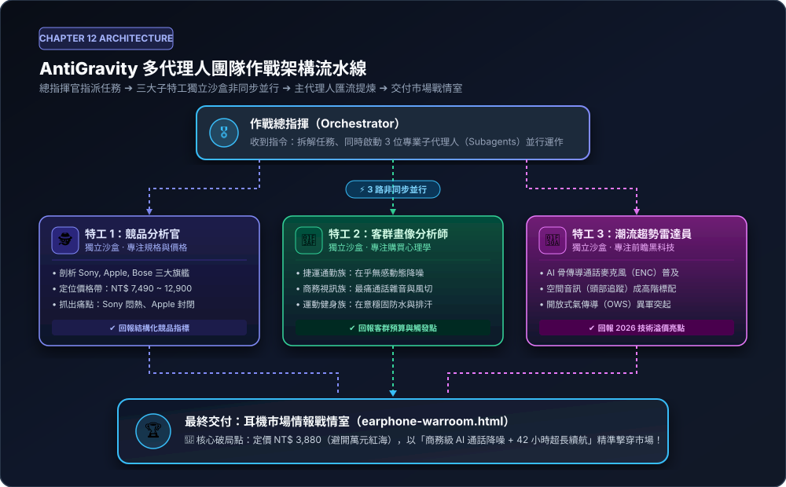
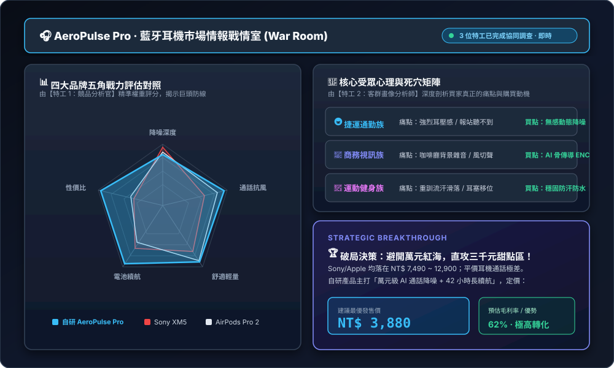
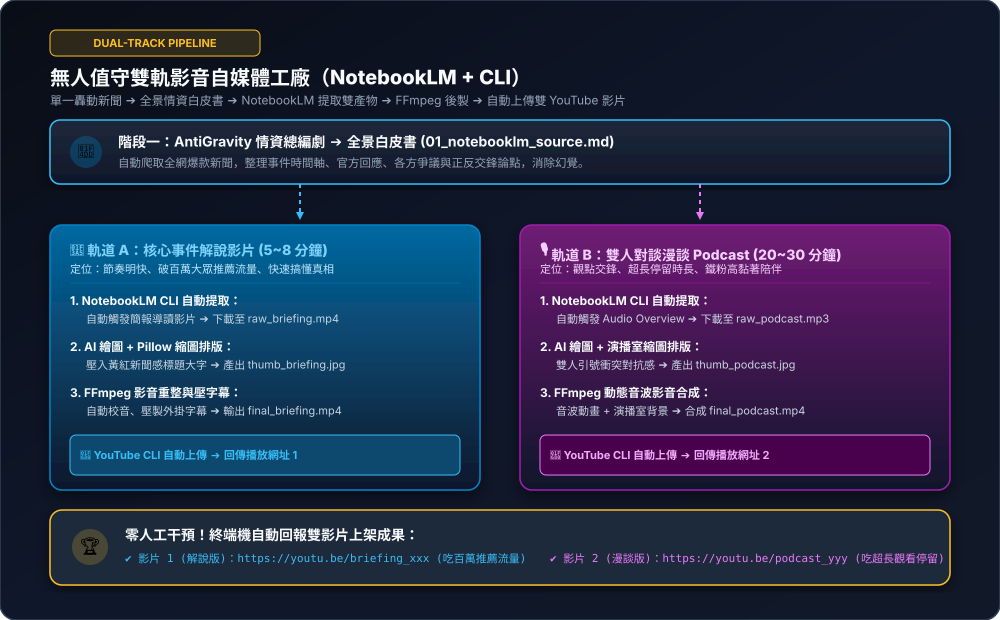

多代理人團隊作戰：調動 AI 虛擬軍團，打造 24 小時藍牙耳機市場戰情室
告別單一對話視窗的記憶錯亂與回答截斷！本章解鎖 AntiGravity 最強核心王牌——多代理人（Subagents）並行調度系統。你不再是自己苦思每個步驟的執行者，而是化身「專案最高指揮官」，一句話派出專門的特工團隊非同步調查競品、拆解買家心理、捕捉前瞻趨勢，並在幾分鐘內自動交付具備高度商業決策價值的互動戰情室！
12-1 觀念破冰：為什麼單兵會崩潰？從「聊天者」升級「專案指揮官」
在過去學習 AI 的過程中，很多人習慣把所有任務一股腦丟給同一個對話視窗：「請幫我爬 3 家耳機競品、分析 3 個客群、調查最新趨勢，然後寫一份報告再寫出網頁代碼」。這種「單兵對話模式」往往會引發三大災難：
❌ 上下文塞車（Token 膨脹）
爬蟲抓取回來的長篇網頁文字塞滿了記憶體，導致 AI 後繼無力，開始胡言亂語或截斷。
❌ 注意力渙散（前面說的後面忘）
AI 在寫後端代碼時，已經忘記了前面第一段設定的客群預算限制，前後矛盾。
❌ 職責衝突（角色人格打架）
同一個 AI 無法一邊扮演吹毛求疵的資安審計員，又一邊扮演天馬行空的行銷文案設計師。
現實生活中，一家公司的執行長（CEO）絕不可能自己管財務、跑業務又親自寫代碼。優秀的領導者懂得「定義組織職能、指派專項任務、驗收匯流成果」。這正是 AntiGravity 多代理人架構的精髓所在！
12-2 核心機制解密：AntiGravity 調度 Subagents 的 3 大基石
AntiGravity 賦予了主代理人（Orchestrator）調動專屬子代理（Subagent）的底層協議。這不是單純的多開分頁，而是具備嚴格工程架構的協同系統：

總指揮官接收自然語言任務 ➔ 3 位特工在獨立沙盒非同步並行 ➔ 交叉匯流提煉破局點 ➔ 自動交付互動戰情室。
🧩 Subagents 運作的三大支柱：
- 獨立沙盒與上下文隔離（Context Isolation）：每位子代理都在乾淨、專屬的記憶環境中作業。競品情報官看了一百頁技術規格，這些雜訊絕不會污染到前端工程師的代碼畫布。
- 專用權限最小化（Specialized Tooling）：市場調研員只給予搜尋與網頁閱讀權限，不給檔案修改權限；前端工程師只給予代碼產出權限。權限邊界清晰，系統既安全又穩定。
- 非同步並行加速（Parallel Execution）：過去串列執行要花 10 分鐘的繁雜調研，在多代理人並行下，3 位特工同時在背景發動，2 分鐘內全數回傳完畢！
12-3 深度實戰拆解：藍牙耳機市場戰情室（三大特工調度）
延續我們在第 2 章製作過的「藍牙耳機」主題，現在我們自研了一款旗艦耳機（代號 AeroPulse Pro），準備推向市場。我們不再盲目瞎猜，而是派出三位特工摸清市場底牌！
三大王牌特工的角色職責手冊（Persona Blueprint）
鎖定 Sony WH-1000XM5、AirPods Pro 2、Bose QC Ultra，整理價格帶與負評死穴。
鎖定捷運通勤族、商務視訊族、運動健身發燒友，挖出心理預算與真正痛點。
鎖定 AI 骨傳導 ENC 降噪、頭部追蹤空間音訊與開放式 OWS 溢價賣點。
下達作戰密碼：一鍵啟動軍團的黃金指令
只需將以下指令複製貼入 AntiGravity 對話框，便能瞬間觸發多代理人非同步調度：
我要推出我們的自研旗艦降噪耳機（代號 AeroPulse Pro）。請幫我啟動市場研究軍團，兵分三路同步進行深度調查：
1. 競品分析官（Competitor Spy）：鎖定市面三大熱銷競品（Sony WH-1000XM5、AirPods Pro 2、Bose QC Ultra），剖析其通路價格帶、核心技術優勢，以及各大論壇使用者抱怨最多的 3 大痛點缺點。
2. 客群畫像分析師（Audience Persona）：深度拆解三大核心族群（捷運高鐵通勤族、商務遠距會議族、運動健身發燒友）的心理預算上限、最在意的死穴與購買觸發點。
3. 潮流趨勢雷達員（Trend Radar）：調研未來兩年藍牙耳機最具溢價空間的新黑科技（如空間音訊、AI 骨傳導通話降噪、開放式 OWS、超低延遲）。
三路調查完畢後，請主指揮官交叉比對情報，提煉出『我們耳機的必勝破局點（定價與主打賣點）』，並自動建立一個高質感的視覺化網頁檔案『earphone-warroom.html』，包含競品戰力五角雷達圖與客群需求卡片！
結合四品牌五角戰力雷達圖、三大買家受眾需求矩陣與 NT$ 3,880 破局定價建議面板。
成果驗收：可即時互動的耳機市場戰情室
任務完成後，資料夾內會自動生成 earphone-warroom.html。點開瀏覽器，你會看到令人驚豔的現代暗黑科技儀表板：
- 📊 HTML5 Canvas 動態五角雷達圖：直觀對照四大品牌在降噪、通話、舒適、續航與性價比上的分佈。
- 👥 受眾心理標籤牆：點擊切換通勤族、商務族與運動族，查看不同人群願意掏錢的「殺手級關鍵詞」。
- 💡 破局定價建議：AI 算出萬元市場紅海競爭過於激烈，建議定價 NT$ 3,880，主打「萬元級 AI 通話降噪 + 42 小時長續航」，以極高性價比擊穿市場！
12-4 拓展實戰寶庫：跨領域三大黃金軍團（含無人值守雙軌影音產製）
多代理人協同的威力絕不僅限於硬體耳機！以下提供業界最搶手的三大跨領域真實場景，特別是融合 NotebookLM 雙產物提取與 CLI 全自動發布 的極限自媒體流水線，學員可依自己的業務直接套用：
💻 場景二：【一人軟體公司】全自動全端系統開發與測試驗收軍團
適用：獨立開發者 / 工程研發商業痛點：想開發一個「客戶線上預約諮詢 SaaS 系統」，但只有自己一個人。既要切前端版面、寫後端 API 資料清洗、還要寫自動化測試，往往寫完前端就筋疲力盡，功能漏洞百出。
請啟動一人軟體開發團隊，為我打造一套『現代化客戶預約排程系統』：
1. 產品規格經理（PM Subagent）：定義預約流程所需的資料格式（姓名、電話、預約時段、需求項目、防呆驗證規則），產出標準 schema.json 契約。
2. 前端介面設計師（Frontend Subagent）：根據 PM 的規格，使用 Tailwind CSS 與現代玻璃擬態風格，打造出高轉換率的預約表單頁面『booking.html』，具備即時日期選擇與欄位驗證動畫。
3. 後端 API 工程師（Backend Subagent）：以 Node.js 寫出接收預約資料的 API 處理模組『api/booking.js』，確保防止 SQL 注入與 XSS 攻擊。
4. QA 測試審計員（QA Tester Subagent）：針對前後端資料契約，撰寫 5 組邊界情境自動化測試案例（例如重複預約、惡意腳本輸入、電話號碼格式錯誤），並確保全數綠燈通過。
全部完成後，輸出完整的專案目錄與驗收總覽文件！booking.html：高轉換率、支援手機響應式的高質感預約前台。api/booking.js：具備防禦性程式碼與輸入驗證的後端 API。tests/booking.test.js：QA 特工自動執行並確保「5 passed, 0 failed」的綠燈測試報告。- 前後端資料欄位完全依照
schema.json規範，零格式衝突！
🌍 場景三：【跨境電商出海】跨國品牌「多語系社群爆款與文化避雷軍團」
適用：品牌行銷 / 跨境電商商業痛點：自家的「台灣精品高山冷泡茶禮盒」要賣到日本、美國與德國。如果只用 Google 翻譯，文字僵硬且充滿機翻感，甚至容易踩到當地文化禁忌（例如日本送禮對顏色緞帶有極端講究、德國人看重客觀有機檢驗而非感性修辭）。
我們正在將『台灣高山精品冷泡茶禮盒』推向跨國市場。請啟動出海多國行銷軍團，兵分四路針對美、日、德三地展開深度在地化文案與合規企劃：
1. 日本文化行銷特工（Japan Specialist）：以日本高標準禮品文化（お中元/お歳暮）、日式極致審美語氣撰寫 IG/X 宣傳文案，並嚴格檢查包裝色調與敬語用法，列出文化避雷清單。
2. 北美社群爆款特工（US TikTok/IG Specialist）：以美國年輕族群重視的『無糖健康（Zero Sugar）、辦公室提神、永續環保包裝』為切角，產出高節奏、吸引點擊的短影音腳本與廣告文案。
3. 德國品質與法規特工（Germany Specialist）：以德國人嚴謹理性的特點，著重產地履歷（Traceability）、無農藥殘留歐盟檢驗標準，撰寫正式的商品型錄介紹。
4. 視覺化通訊總監（Art Director）：將三位特工的成果整合成一個多語系行銷戰情頁面『global-marketing.html』，讓我可以一鍵切換國家預覽各國社群卡片與視覺配色！global-marketing.html：內建美、日、德三國旗標籤切換按鈕的行銷戰情頁面。- 日本專頁：文字優雅富有禪意，特別標註「包裝避免純白緞帶，應採用金銀水引結繩以示吉慶」。
- 美國專頁：節奏明快幽默（"Ditch your 3rd coffee! Meet crisp alpine cold brew"）。
- 德國專頁：條列清晰的 SGS 檢驗條目與歐盟有機食品認證標示建議，直球對決理性質詢。
🎥 場景四（壓軸王牌）：【自媒體與影音雙軌無人值守軍團】NotebookLM 雙產物提取 + CLI 後製 + YouTube 自動雙影片發布
終極全自動 · 零人工搬運商業痛點與戰略思維：自媒體創作最大的痛點是「製作成本高、平台格式單一、人工手動剪輯與上傳耗時」。頂級 MCN 機構採用「一魚兩吃（One Topic, Dual Formats）」策略：同一個轟動新聞，同時產出「5 分鐘明快解說片（吃搜尋與推薦流量）」與「25 分鐘雙人深度 Podcast 漫談（吃超長觀看時長與粉絲黏著度）」。更關鍵的是——從 NotebookLM 生成、下載、FFmpeg 剪輯到 YouTube 上架，全程由本機 CLI 與自動化特工接管，拒絕人工搬運！

同一轟動新聞 ➔ 全景情資白皮書 ➔ 自動下載解說影片與播客音訊 ➔ 本機 CLI 影音重整 ➔ 自動發布雙影片。
01_notebooklm_source.md。• NotebookLM CLI 特工：以無頭瀏覽器自動上傳資料 ➔ 自動觸發並下載【簡報解說影片】與【雙人對談 Podcast 音訊】。
• 視覺與排版特工：呼叫繪圖 API 與本機 Python Pillow，自動壓上高對比立體標題，輸出 16:9 解說封面與 Podcast 封面。
• FFmpeg 影音重整特工：解說影片壓製外掛字幕；Podcast 音訊結合動態波形圖與演播室背景，合成 1080p 影片。
• YouTube CLI 發布特工：調用 YouTube Data API，自動上傳兩部影片，綁定對應縮圖、填入時間軸與 SEO 說明欄！
我們要啟動『雙軌影音自媒體無人值守生產軍團』。請由主指揮官調動特工團隊，全程透過本機 CLI 與自動化腳本協同交付：
【第一階段：情資研調與全景白皮書】
1. 情報與觀點特工：爬取當前討論度最轟動的新聞，進行正反深度剖析，整理成結構化文件『01_notebooklm_source.md』。
【第二階段：NotebookLM CLI 雙產物提取】
2. NotebookLM 自動化特工：
• 自動啟動瀏覽器腳本將『01_notebooklm_source.md』導入 NotebookLM。
• 自動觸發並下載【說明簡報影片】至『assets/raw_briefing.mp4』。
• 自動觸發並下載【雙人對談音訊】至『assets/raw_podcast.mp3』。
【第三階段：雙風格縮圖 CLI 渲染】
3. 視覺排版特工：
• 調用繪圖與排版腳本，自動產出解說片縮圖『assets/thumb_briefing.jpg』。
• 自動產出 Podcast 漫談片縮圖『assets/thumb_podcast.jpg』。
【第四階段：FFmpeg 雙影片後製重整】
4. 影音工程特工：
• 將說明影片壓製高畫質字幕與音量平衡，輸出『assets/final_briefing.mp4』。
• 將 Podcast 音訊結合動態波形圖與背景，合成 1080p 漫談影片『assets/final_podcast.mp4』。
【第五階段：YouTube CLI 雙影片自動發布】
5. 發行上傳特工：
• 透過 YouTube CLI 上傳『final_briefing.mp4』，掛載解說縮圖、標題與 SEO 標籤。
• 透過 YouTube CLI 上傳『final_podcast.mp4』，掛載 Podcast 縮圖、章節時間軸與收聽引導。
• 任務完成後，在終端機打印出兩部影片的 YouTube 公開觀看連結！assets/final_briefing.mp4：5~8 分鐘節奏明快的新聞事件全解析影片。assets/final_podcast.mp4：20~30 分鐘雙人觀點交鋒、帶有動態波形動畫的沉浸式 Podcast 影片。assets/thumb_briefing.jpg&assets/thumb_podcast.jpg：兩張風格截然不同、高點擊率的爆款縮圖。- 🚀 終端機直接回傳兩組 YouTube 公開播放連結（一鍵點擊即可於全球觀看，零手動上傳介入！）。
12-5 成果驗收與進階思考：常見疑惑 Q&A
在開始調動多代理人之前，初學者常見以下問題：
❓ Q1：子代理（Subagents）在背後跑，會不會偷偷把我的 API 額度燒光？
答：完全不用擔心！ AntiGravity 的子代理機制採用「嚴格任務邊界與自律結束條件」。每個子代理只有明確的一到兩項任務，完成產出後立即自動關閉並回報結論給主指揮官，絕不會像無頭蒼蠅一樣無窮迴圈耗費 Token。
❓ Q2：如果其中一個子代理抓取失敗或網路卡住，整個任務會死當嗎？
答：不會！ 這正是「非同步隔離」的最大優勢。主指揮官具備異常監控能力，當特工 A 遭遇阻礙時，指揮官會嘗試重試或直接依據特工 B、C 的已有數據先行彙編，並在總結報告中誠實標明備註，不會拖垮整體流程。
❓ Q3：我可以為自己的業務自訂更多專業角色嗎？
答：當然可以！ 只要在提示詞中明確寫出「角色職稱、關注領域、限制不要碰的範圍、以及期待交付的格式」，AntiGravity 就會自動為你量身塑造任何職位的虛擬專家。
你已經跨越了 99% 的一般 AI 使用者，正式晉升為能夠指揮 AI 團隊的高階工程指揮官！在接下來的第 13 章中，我們將更進一步解鎖**「自我修復迴圈（Self-Healing Loop）」**——讓 AI 不僅能寫代碼，還能自己看終端機報錯、自己修 bug，全綠燈才向你交付！